Character Development (part 2)
By Jesse van der Merwe,
Technical Drawing Inspiration
Character's Education
After finishing high school, Eddie's family did not have enough money to send him to a university. However his father was adamant that he was to learn a trade. Eddie went into the trade of small instrument making, and for many years he made specialist instruments for all types of people - from doctors, to other craftsmen.
However, as grateful as Eddie was for getting the chance to work and learn such a skill, it quickly became quite repetitive. Eddie always had a great passion of learning and teaching, and so he started to look for work elsewhere. Eddie was then fortunate enough to be hired as a part-time lecturer (as he had been trained in technical drawing during his trade) by an institute that simultaneously allowed him to complete a mechanical engineering diploma. After this, Eddie studied further in Theology – as his family was (is?) very religious - as well as Social Studies.
It was at this point that Eddie noticed a great need in his city and in his country as a whole - there were too many students, coming from previously (or currently) disadvantaged backgrounds that did not possess the skills that the institute assumed that they had already - and these skills were required in order to simply pass (let alone excel) at the technical drawing course (or any other course that requires 3D visualization skills). This inspired Eddie to create a one-year bridging course for such students, that would allow them to catch up the missing skills in minimal time, and thus further their studies with better pass rates and grades. Eddie headed this program for many years, and continued to lecture at the institute until retiring only six years ago. Eddie wrote the book "Introduction to Engineering Graphics" which was used extensively as the course material for many years (perhaps is still used today... it's still in the Wits University Press at the very least).
The Inspiration Drawn from this
Since my (Jesse's) character is based off my own grandfather (Errol van der Merwe), and he actually did write "Introduction to Engineering Graphics", I decided that this would be great inspiration for my website. I thus dedicated an entire day (pfft... totally not procrastinating other work) to draw images in an attempted "technical drawing" style. Since I have no actual technical drawing training, and didn't have time to read my grandfather's book, I just used my trusty Typo note pad and lots of pencil lines. I am quite happy with the result.
 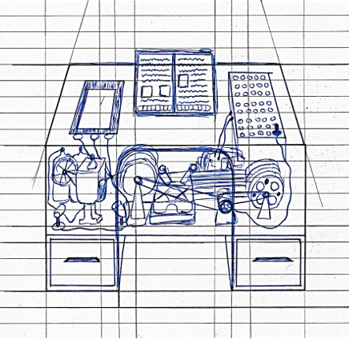
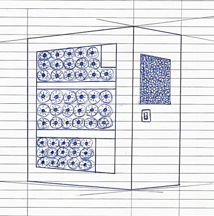
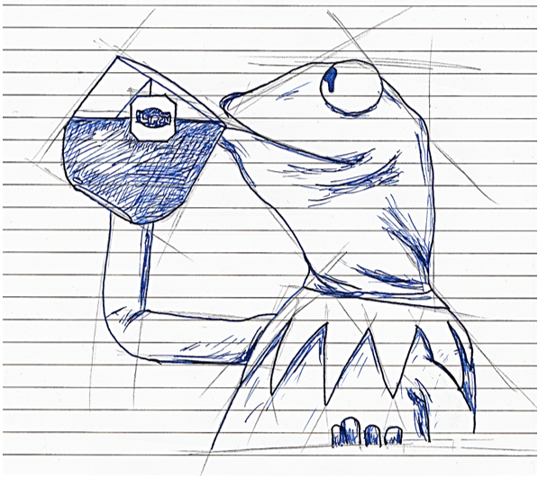
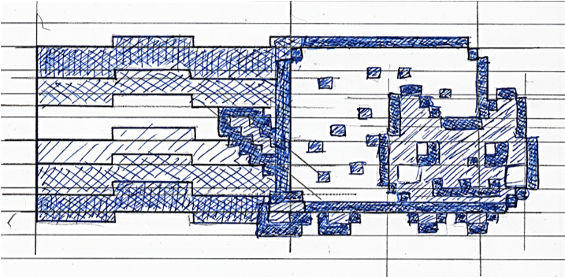
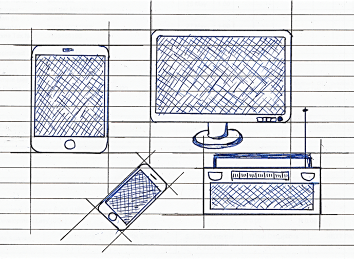
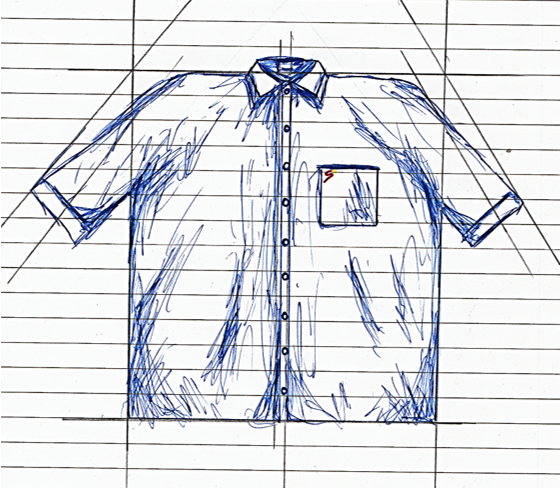
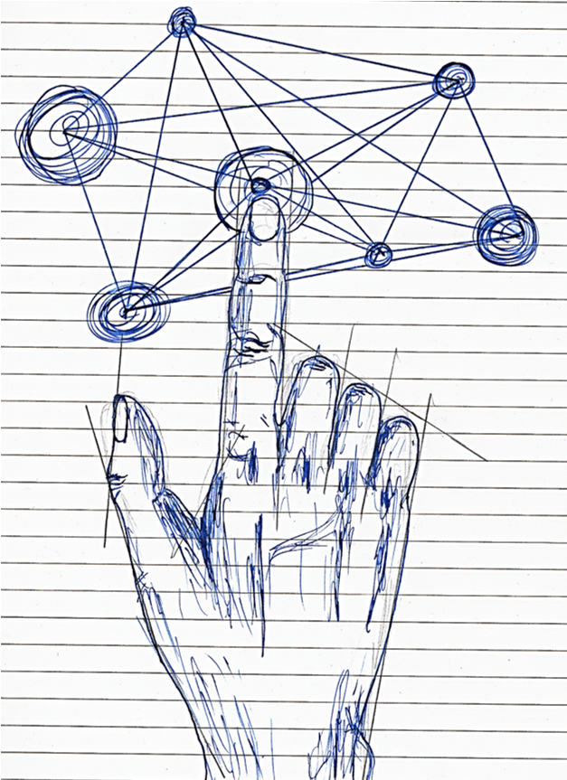
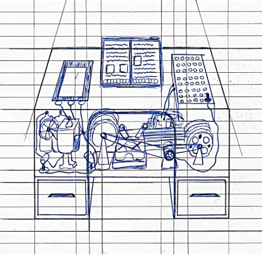
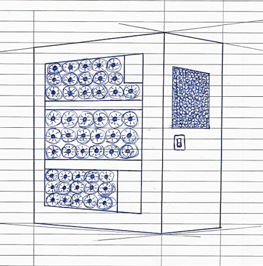
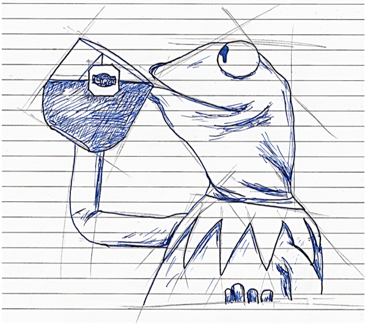
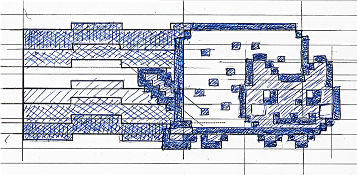
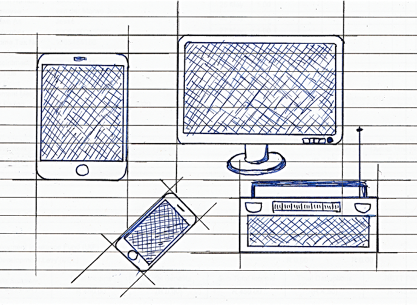
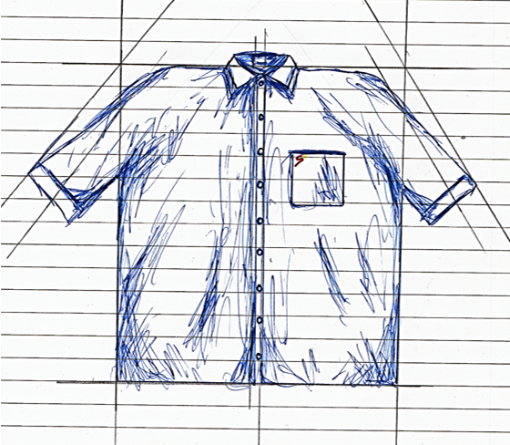
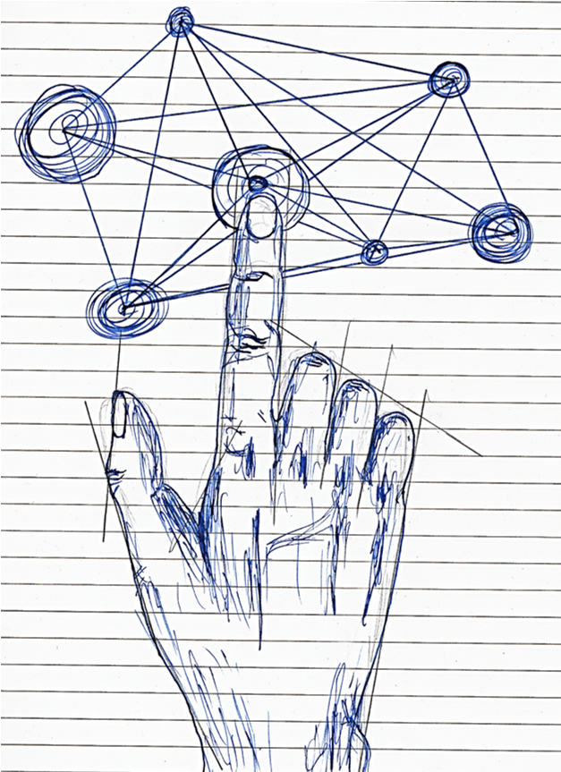
 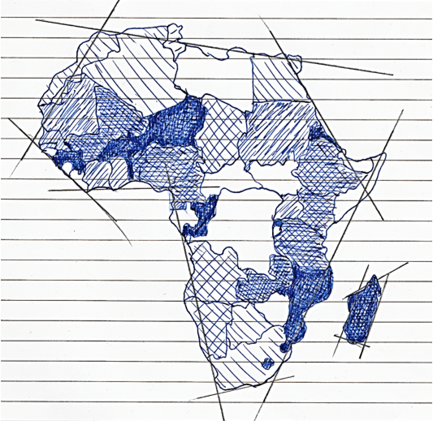
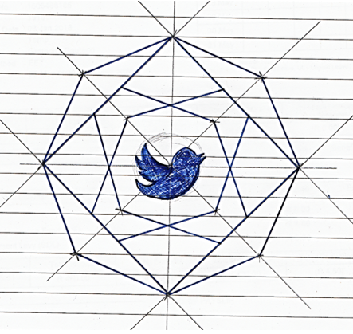
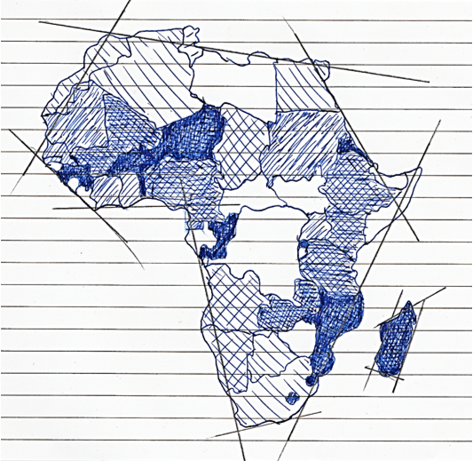
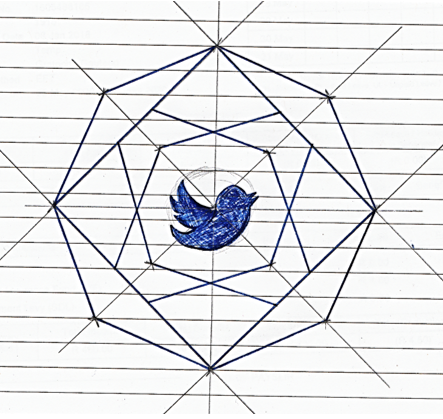
This was done to try and further incorporate my character into his own website - hopefully by using this 'style' it further propagates the idea that he, himself, drew the images. I am particularly proud of Kermit, not gonna lie.